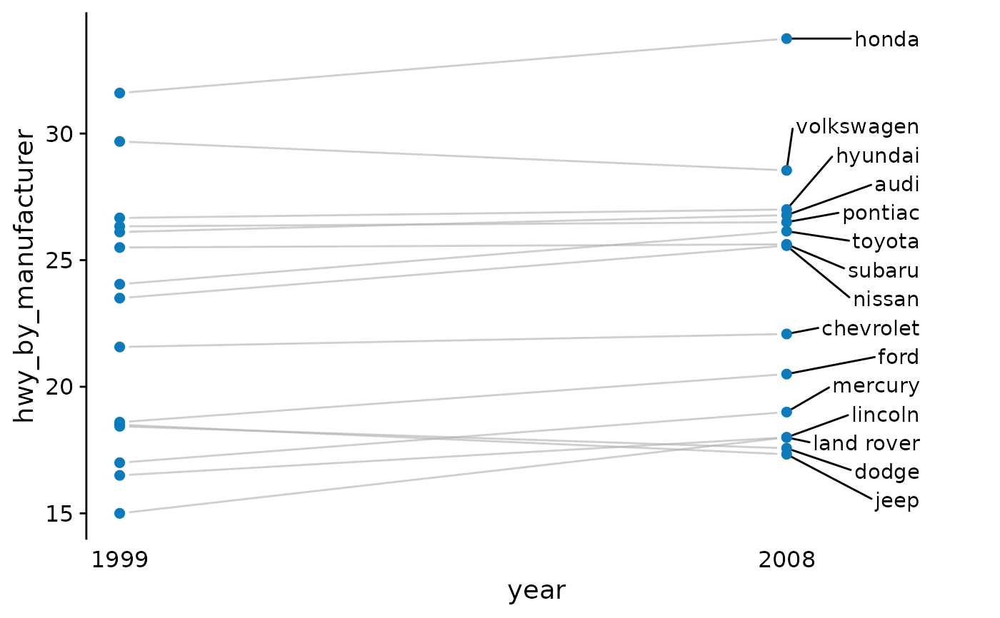

Zeitreihen visualisieren. plot_timeseries_* Familie.
Quelle:R/plot_time_series.R
plot_timeseries.RdZeitreihen visualisieren. plot_timeseries_* Familie.
Verwendung
plot_timeseries_slope(
data,
x,
y,
group,
color_point = "#0d7abc",
color_line = "#b3b3b3a0"
)
plot_timeseries_line(
data,
x,
y,
group,
color_line = "#0d7abc",
color_area = "#6fa8dc",
y_limits = NULL
)
plot_timeseries_trend(
data,
x,
y,
method = NULL,
formula = NULL,
color_line = "black",
color_trend = "#0d7abc",
y_limits = NULL
)
plot_timeseries_detrend(
data,
x,
y,
method = "pc",
group,
facet = TRUE,
color_line = "#0d7abc",
color_area = "#6fa8dc",
y_limits = NULL
)Argumente
- data
Ein Tibble mit den Daten für den Plot.
- x
Die Variable für die x-Achse.
- y
Die Variable für die y-Achse.
- group
Gruppierungsvariable für einen einzelnen Plot.
- color_point
Farbe der Punkte.
- color_line
Farbe für die Linie.
- color_area
Farbe vom Bereich unter dem Linienplot.
- y_limits
Die beiden Poole bei der Y-Achse. Mehr Infos beim Argument limits in der ggplot2 Dokumentation
- method
Methode die in der Funktion verwendet wird. Variiert je nach Funktion. Mehr Infos beim Argument method in der ggplot2 Dokumentation
- formula
Berechnungsformel der Methode. Mehr Infos beim Argument formula in der ggplot2 Dokumentation
- color_trend
Farbe für die Trendlinie.
- facet
Gruppierungsvariable um einen Plot je Teilaspekt zu machen (Facetten).
Beispiele
ggplot2::mpg |>
dplyr::group_by(year, manufacturer) |>
dplyr::summarise(hwy_by_manufacturer = mean(hwy)) |>
dplyr::ungroup() |>
plot_timeseries_slope(x = year, y = hwy_by_manufacturer, group = manufacturer)
#> `summarise()` has grouped output by 'year'. You can override using the
#> `.groups` argument.

stock_markets <- tsbox::ts_tbl(datasets::EuStockMarkets) |>
dplyr::mutate(time = lubridate::as_date(time))
# ein Aktienmarkt (1 Merkmal)
stock_markets |>
dplyr::filter(id == "FTSE") |>
plot_timeseries_line(x = time, y = value, group = id)
# mehrere Aktienmaerkte (n Merkmale)
stock_markets |>
dplyr::filter(id != "FTSE") |>
plot_timeseries_line(x = time, y = value, group = id)
# ein Aktienmarkt (1 Merkmal)
stock_markets |>
dplyr::filter(id == "FTSE") |>
plot_timeseries_trend(x = time, y = value)
#> `geom_smooth()` using method = 'gam' and formula = 'y ~ s(x, bs = "cs")'
# mehrere Aktienmaerkte (n Merkmale)
stock_markets |>
dplyr::filter(id != "FTSE") |>
plot_timeseries_trend(x = time, y = value) +
# Erweiterung mit ggplot2 Funktion
ggplot2::facet_wrap(ggplot2::vars(id))
#> `geom_smooth()` using method = 'gam' and formula = 'y ~ s(x, bs = "cs")'
# trendbereinigte monatliche Entwicklung
stock_markets |>
# zuerst die durchschnittliche
# monatliche entwicklung berechnen
dplyr::mutate(time = format(time, "%Y-%m")) |>
dplyr::group_by(id, time) |>
dplyr::summarise(value = mean(value)) |>
dplyr::ungroup() |>
plot_timeseries_detrend(x = time, y = value, group = id)
#> `summarise()` has grouped output by 'id'. You can override using the `.groups`
#> argument.
#> Warning: Removed 1 row containing missing values (`geom_line()`).